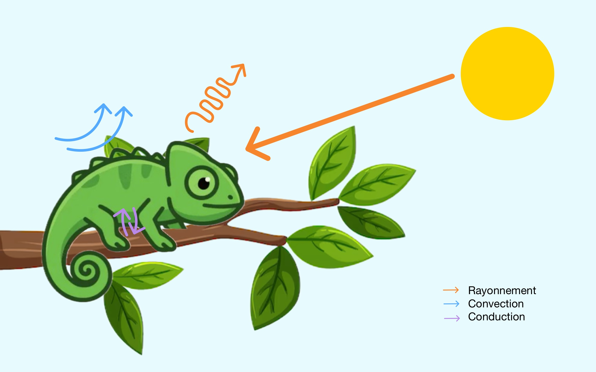

Projet de Thermique — [CPI 2A - ECPM / 2026]
Comment les reptiles, sans mécanisme interne de production de chaleur, parviennent-ils à maintenir une température corporelle optimale ? Un voyage entre conduction, convection et rayonnement.
Explorer
Les reptiles comme beaucoup d'animaux pratiquent la thermorégulation. Ils sont ectothermiques, c'est à dire que leur température interne change en fonction de l'environnement dans lequel ils évoluent. La température optimale de l'environnement d'un caméléon est par exemple de 29°C en moyenne, mais il doit aussi s'exposer au soleil tous les jours à des températures pouvant atteindre 35 à 40°C.
Section 1
Les reptiles maîtrisent l'autorégulation thermique, un phénomène physiologique fascinant et une véritable stratégie comportementale. On dit que ce sont des poïkilothermes, c'est-à-dire des êtres vivants dont la température interne varie avec la température de leur environnement.
Mais qu'est-ce que la thermorégulation ? C'est la capacité, pour les animaux dits à sang froid, à ajuster leur température corporelle pour qu'elle soit optimale. En effet, ils vivent chacun dans des environnements différents et ils démontrent une capacité exceptionnelle à moduler leur débit sanguin cutané pour s'adapter aux variations thermiques. Ainsi, l'autorégulation thermique se fait de deux manières différentes.
Un mammifère (endotherme) brûle des calories pour maintenir ~37°C en permanence. Un reptile (ectotherme) économise cette énergie mais doit « chercher » sa chaleur dans l'environnement.
La méthode la plus connue chez les reptiles est le recours au soleil pour élever leur température corporelle. Pour cela, ils utilisent la chaleur radiante directe du soleil en combinaison avec la chaleur conductrice des surfaces chauffées par le soleil, telles que les branches, les pierres… Les reptiles peuvent modifier l'orientation de leur corps pour maximiser ou minimiser l'absorption de la chaleur du soleil. Ils peuvent aplatir leur corps pour augmenter la surface et absorber plus de chaleur ou se soulever du sol pour réduire le contact avec les surfaces chaudes. En cas de surchauffe, ils fuient vers l'ombre, s'enfouissent ou se cachent dans la végétation. Certaines espèces peuvent également aller dans l'eau pour se rafraîchir.
Les écailles sur la peau des reptiles, le fait que certains changent de couleur, leur aspect général, rien n'est laissé au hasard. Cela permet encore une fois à ces animaux d'avoir une température stable et optimale. Les écailles jouent le rôle de barrière isolante. Elles empêchent la chaleur accumulée de se dissiper trop rapidement et limitent l'absorption de la chaleur extérieure. On observe aussi chez certaines espèces comme le caméléon des variations de couleur (généralement du foncé au clair) ; cela permet, selon les besoins de l'animal, d'absorber ou de refléter le rayonnement solaire. De plus, certains reptiles, comme les lézards, ont des glandes à sel spéciales qui leur permettent de se débarrasser de l'excès de sel dans leur corps. Enfin, certains reptiles, comme les serpents, modifient leur débit sanguin pour réguler la chaleur corporelle. En augmentant la circulation sanguine à la surface de la peau lorsqu'ils sont exposés au soleil, ils peuvent emmagasiner la chaleur plus efficacement.
Section 2
La thermorégulation des reptiles met en jeu les trois mécanismes fondamentaux de la thermique. Voici comment ils s'appliquent concrètement.
Transfert de chaleur par contact direct. Un reptile allongé sur une roche
chauffée par le soleil absorbe sa chaleur par conduction.
La chaleur passe du solide chaud à la peau plus froide.
Formule : \( \varphi = \dfrac{\lambda \cdot S \cdot \Delta T}{e} \)
Transfert de chaleur par un fluide en mouvement (air, eau).
Un reptile dans un courant d'air chaud absorbe de l'énergie.
À l'inverse, l'air frais emporte sa chaleur corporelle par convection naturelle.
Formule : \( \varphi = h \cdot S \cdot (T_\text{surface} - T_\text{fluide}) \)
Émission et absorption d'ondes électromagnétiques (infrarouge, visible).
Le soleil émet un rayonnement incident que le reptile absorbe selon la couleur
de sa peau (émissivité ε).
Loi de Stefan-Boltzmann : \( \varphi = \varepsilon \cdot \sigma \cdot S \cdot T^4 \)
Section 3 — Cas particulier
Le caméléon est souvent associé au camouflage, mais son changement de couleur a aussi une fonction thermorégulatrice. Des cristaux nanostructurés dans sa peau lui permettent de moduler sa réflectance.
Le matin, à froid, le caméléon fonce sa peau pour maximiser l'absorption des rayons solaires incidents. En milieu de journée, il pâlit pour réfléchir l'excès de rayonnement et éviter la surchauffe.
• Peau sombre : absorptivité α ≈ 0.9 → absorption maximale
• Peau claire : réflectivité ρ ≈ 0.7 → réflexion de l'infrarouge
• Émissivité propre : ε ≈ 0.95 (comme la plupart des organismes vivants)
Étude quantitative
On s'intéresse à la température interne du caméléon et à celle de sa peau. On considère les échanges thermiques suivants : conduction à travers la peau, convection avec l'air ambiant, et rayonnement solaire incident.

À l'équilibre, le flux absorbé est égal au flux émis par rayonnement :
\[ \Phi_e^{\text{cam}} = a \cdot \Phi_e^{\text{soleil}} \implies S_c \cdot \varepsilon_c \cdot \sigma \cdot T_{\text{interne}}^4 = a \cdot \Phi_i \cdot S_c \]On en déduit la température interne :
\[ T_{\text{interne}} = \sqrt[4]{\frac{\Phi_i}{\sigma}} = 306{,}44 \text{ K} \approx 33{,}3°\text{C} \]En régime permanent, les flux de conduction et de convection sont égaux :
\[ \phi_1 = \phi_2 = \phi \]En combinant l'ensemble des flux :
\[ T_{\text{interne}} - T_{\text{air}} = \frac{\phi}{S} \cdot \left( \frac{e}{\lambda} + \frac{1}{h} \right) \]On en tire le flux thermique :
\[ \phi = \frac{S\,(T_{\text{interne}} - T_{\text{air}})}{\dfrac{e}{\lambda} + \dfrac{1}{h}} = 8{,}54 \text{ W} \]Puis la température de peau :
\[ \phi = h \cdot S \cdot (T_{\text{peau}} - T_{\text{air}}) \iff T_{\text{peau}} = \frac{\phi}{h \cdot S} + T_{\text{air}} = 32{,}1°\text{C} \]Section 4
Chaque espèce de reptile a développé des stratégies propres pour optimiser ses échanges thermiques avec l'environnement.
Le crocodile du Nil vit en Afrique, dans des rivières et marécages où la température de l'air peut atteindre 30 à 40°C. C'est un animal ectotherme : sa température corporelle varie environ entre 25°C et 33°C. Pour se réchauffer, il s'expose au soleil sur les berges et absorbe la chaleur par rayonnement et conduction (contact avec le sol chaud). Pour se refroidir, il entre dans l'eau, où la convection permet d'évacuer la chaleur plus facilement.
Le lézard à orteils frangés vit dans le désert du Mojave, où les températures peuvent atteindre 50 à 60°C au sol le jour et descendre sous 10°C la nuit. C'est un animal ectotherme : sa température corporelle varie généralement entre 30°C et 38°C. Le matin, il se réchauffe grâce au rayonnement solaire et à la conduction sur le sable chaud. Quand la température devient trop élevée, il s'enfouit dans le sable plus frais ou cherche l'ombre. La convection de l'air et du sable l'aide aussi à perdre de la chaleur.
Notre groupe
Quelques réflexions de chaque membre de l'équipe sur ce projet de thermique.
« Ce qui m'a le plus surpris, c'est de réaliser que le changement de couleur du caméléon n'est pas seulement du camouflage — c'est avant tout de la physique ! »
« La simulation m'a aidé à visualiser comment les trois modes de transfert agissent simultanément sur un seul animal. »
« J'ai trouvé fascinant le lien entre la loi de Stefan-Boltzmann et un comportement animal qu'on observe chaque été sur les murs ensoleillés. »
« Ce projet m'a montré que la thermique est partout dans la nature, pas seulement dans les moteurs ou les bâtiments. »